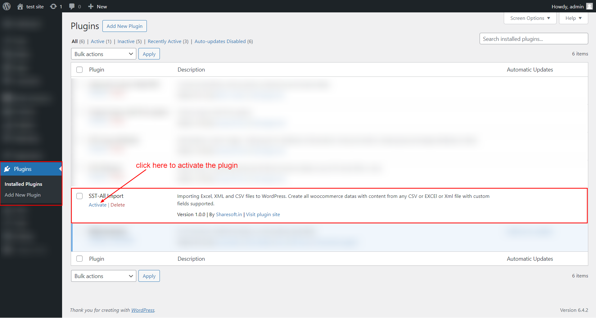

ALL Import Woocommerce Plugin Documentation by “ ShareSoft Technology ” v1.0
ALL Import Woocommerce Plugin
Created: 31-06-2023
Last Update: 31-07-2023
By: ShareSoft Technology
Email: ShareSoft Technology
Information about updates and new features in Plugin are announced on our Social Networks - Twitter and Facebook. Follow us on Twitter to stay tuned on updates and Connect with us on Facebook for more detailed updates
Hello! We would like to thank you for purchasing our plugin! :)
This file will explain you how to set up and use the “ALL Import Woocommerce” plugin.
This file looks extensive so you might think that, the plugin is hard to use, but actually it's not! You probably might jump to the options page and explore everything yourself. This file is more of a reference help, if you do not know what to do, or if you are not familiar with WordPress.
Have fun with your new plugin!
Best regards,
ShareSoft Technology
Table of Contents
Overview - top
The WooCommerce ALL Import plugin is a versatile tool designed to streamline the process of importing orders,customers,products,coupons and reviews into your WooCommerce store. With a user-friendly interface and powerful features, this plugin facilitates effortless import from various file formats like CSV, XLSX, XLS, and XML. It offers a preview of the selected file, allowing you to view all the data before proceeding to the import. The plugin empowers users to choose and disable specific fields to customize the import process, ensuring seamless datas importing according to your specific needs.
Benefits:- Time-Saving: The plugin simplifies the import process, saving time and effort in manually entering data.
- Customizable Import: You have the flexibility to choose and customize the fields according to your requirements, ensuring a tailored import process.
- Error Reduction: The preview feature helps identify any potential data errors before importing, reducing the risk of mistakes.
- Support for Multiple File Formats: The plugin supports various file formats, allowing you to work with data files from different sources.
- Supports woocommerce custom fields, Advanced Custom Fields (ACF) custom fields for comprehensive data import.
Installation - top
2.1 Install plugin - top
Install dependency plugin
- Initially install Wordpress as per online documentation.
- Download the woocommerce plugin.
- Then locate folder path /wp-content/plugins.
- Place the downloaded plugin in that folder and extract it.
After that you can view the plugin added in the list in admin area,

2.2 How to install through FTP #1- top
Install plugin
- Initially install Wordpress as per online documentation.
- Download the All Import Woocommerce plugin.
- Then locate folder path /wp-content/plugins.
- Place the downloaded plugin in that folder and extract it.
After that you can view the plugin added in the list in admin area,

2.3 How to install through Admin Panel- top
Install plugin
- Initially install Wordpress as per online documentation.
- Download the ALL Import Woocommerce plugin.
- Then Go to Wordpress admin panel -> plugins.
- Click Add New --> select ALL Import Woocommerce Zip.
- Install and active the plugin


After that you can view the plugin added in the list in admin area,
How the plugin functions - top
3.1 Admin features-top

- After activating the All Import Woocommercer plugin, next you have to manage Custom admin menu settings.
- Click SST-ALL-Import menu
Image below, explains how the tabs are used.

1. File Selection and Preview:
Below images shows that , Import orders preview from selected .CSV file format.

Below images shows that , Import orders preview from selected .XLSX file format.

Below images shows that , Import orders preview from selected .XLS file format.

Below images shows that , Import orders preview from selected .XML file format.

Click to Continue to step2 --->
2. Display All Fields:Below images shows that , After click Continue to step2 button, all fields present in the import file are displayed.

3. Field Selection and Customization:
Allow users to choose specific fields to import. Disable unnecessary fields that do not need to be imported.

4. Import Orders:
Once you have selected and customized the fields, click on the "Import" button to begin the order import process. The plugin will efficiently import the selected order data into your WooCommerce store.

For Import customers, products , coupons and reviews the same process will be followed.
Once again, thank you so much for purchasing this plugin. As we said at the beginning, We would be glad to help you, if you have any questions related to this plugin.
ShareSoft Technology